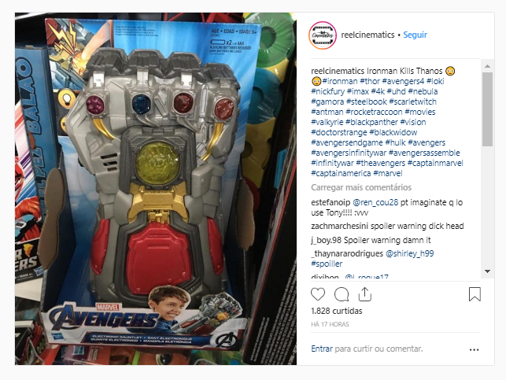

[Cuidado! Possíveis spoilers de Vingadores: Ultimato abaixo]
Os brinquedos licenciados de Vingadores: Ultimato são fontes ricas para quem quer caçar detalhes antes da hora. Um exemplo recente disso é um kit de LEGO que reforçava a teoria de que Tony Stark (Robert Downey Jr.) e sua equipe construirão outra Manopla do Infinito em seu laboratório. Agora, um novo brinquedo confirma justamente isso - veja abaixo:
Na caixa, o brinquedo é apenas identificado como "Manopla Eletrônica". A teoria aponta que os heróis devem construir sua própria versão do item para então buscar uma forma de obter as Jóias do Infinito, possivelmente voltando no tempo. De qualquer forma, isso indica que pelo menos uma parte do boato está certa.
Normalmente, produtos que entregam tanto da trama são impedidos de irem às lojas até, pelo menos, algumas semanas após a estreia do filme. A foto acima deve ter sido tirada por um distribuidor com acesso, e não era pensada para ser vista por enquanto.
Vingadores: Ultimato estreia dia 25 de abril.